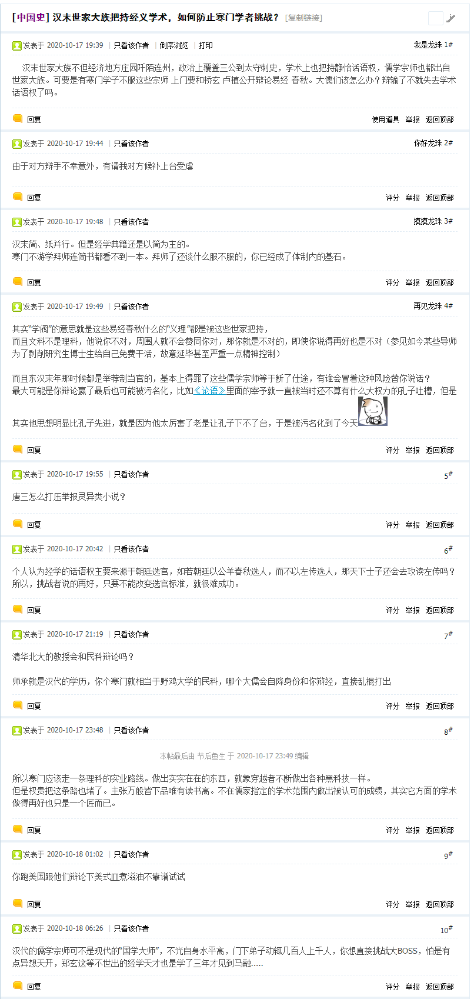
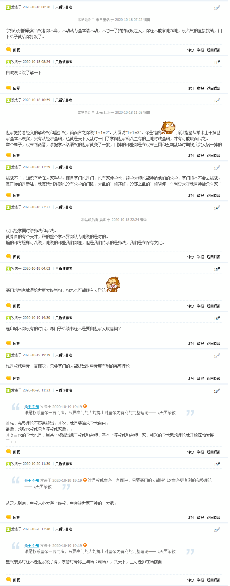
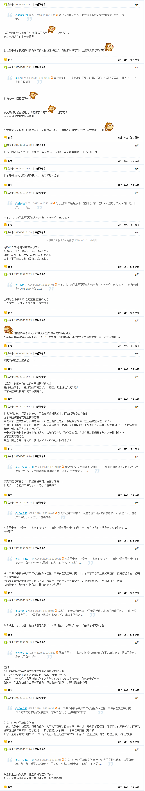
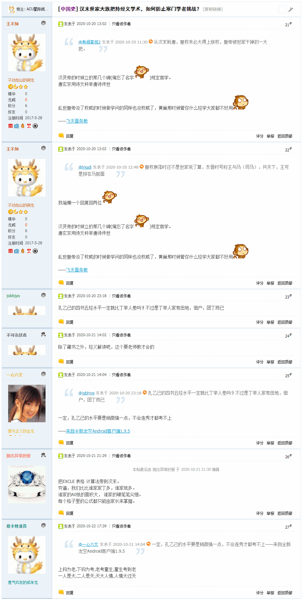
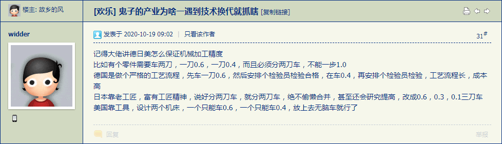

长话短说，在之江临安「原创文学论坛」看到一条素材：




为什么说是素材，还放在《设定集》这边，因为历史事实在《异闻录》那边属于默认常识背景，并且作为情报十几年前见过一次。
简单说，在灰熊猫连载《窃明》的时候，拥趸们曾经策划过与阎崇年「辩经」，那时候这条情报就在之江临安「原创文学论坛」出现了。当时（群里）很多人都提醒灰熊猫，说阎崇年「上面有人」，在「高学历精英社交圈」里能玩死你，甚至公开根本不搭理你，暗地里找「黑鬼」下毒手。后来阎崇年公开场合被人扇大耳贴子，不知道是否真的找人收拾灰熊猫然后被报复了。
哪怕「学术圈」内部，也是拼人脉比依法治国优先级更高，只看公开新闻：
阎崇年“挑出一个错 奖金一千元”——山西大学文学院古代汉语副教授白平纠错索要42万奖金
一审败诉 山大教授白平与阎崇年官司“没完”
副教授起诉阎崇年讨要85万挑错奖败诉再上诉
而二审相关内容，大手搜索引擎之上就没有标题新闻了，大海捞针之后找到的边角网页倒是列出了判决书：
北京市第二中级人民法院
民事判决书
（2011）二中民终字第12199号
……
依照《中华人民共和国民事诉讼法》 第一百五十三条第一款第（一）项之规定，判决如下：
驳回上诉，维持原判。
一审案件受理费12300元，由白平负担（于本判决生效后7日内交纳）；
二审案件受理费12300元，由白平负担（已交纳）。
本判决为终审判决。
审 判 长 胡建勇
代理审判员 屠 育
代理审判员 刘 洋
二0一一年九月九日
书 记 员 左 峥
所以，作为素材，正好可以与《设定集》当中「东漢唯物主义」相关内容结合起来。
先挑点零碎线索解释吧，本篇注释就准备以「壹壹对应影射」为主题了。
在第十六篇设定《皇天后土纸猫刍狗》当中，特意提到了赫拉克利特，是当时以弗所龙椅第一顺位继承人，但是「断发纹身」跑了，从此专攻学术。这个典故巧合，是不是可以与我中华兲朝上国苏州太祖高皇帝扯上关系？
并且赫拉克利特还一直以鸡巴尊贵自负，表面上则伪装成智商爆表而自傲，看不起任何人，尤其是蔑视人民群众，同时还对于「学术圈」内之前和同时期的所有大佬都不放在眼里。因此以「愤世嫉俗离群索居」的形象被称为「哭的哲学家」（一说乃「忧郁」之误）。而德谟克利特则被称为「笑的哲学家」，于是八大山人「哭之笑之」或曰「泣きなさい、笑いなさい」签名档就可以碰瓷了。
还有，那时候就流传着一种说法，赫拉克利特没有师承关系，全凭自学成才。残篇当中提到「我寻找我自己」「人人都有认识自己和健全思想的能力」。无论是不是真的没人教过赫拉克利特，反正这种说法经过第欧根尼记载之后，已经在当时的圈内达成共识了。
因此，一个鸡巴尊贵家财万贯所以可以接触大批学术资料与大批学者谈笑风生还有资格炫耀「能力以外的资本为零」并且不承认「码字工作室隐姓埋名人」（对比毕达哥拉斯学派）存在的高智商低学历精英的形象，就这么跃然纸上了也。
顺便，恩培多克勒「多智而近妖」的形象，可以往兲朝碰瓷的智多星就太多了，包括但不限于诸葛亮、邵雍、刘伯温。
这么一修辞，是不是在涉及相关剧情的时候，旁白以及文中各个角色的口气就可以更损了？
刚爬起来酒劲还在头昏脑胀，上网乱转没发现什么重要情报，继续上面的话题展开。
到这里肯定要提到希帕索斯了，在毕达哥拉斯学派教会内的身份到底是什么。目前的（各种语焉不详乃至自相矛盾的）记载当中，希帕索斯属于「外门弟子」，也就是「信条派」，而其它集体署名为「毕达哥拉斯」的隐姓埋名人则是「内门弟子」，也就是「数理学派」，这里的「理」之含义类似宋明理学的「理」，不是物理的理。
就用国际一流和谐宜居之都「高学历精英社交圈」众生相举例吧。
在涉及到数学相关的问题之下，那些满屏公式的高赞回答，署名的是「老板」，未必是毕达哥拉斯之类大老板，还可能是中层干部。而言之有物但是显示为「匿名用户」的则是打工仔，无论行政上职务如何。只有言简意赅打脸的时候例外，这是在学术界生态已经充分内卷导致黑帮化恐怖组织化的情况下，揭穿「土耳其象棋傀儡」之类骗局需要做好事不留名，否则会被田连阡陌四世三公的「两院院士」于蓄奴州种植园豢养的「黑鬼」嗑多了药之后乱刀捅死然后扔下海。
而那些自媒体公众号炮制的科普文章，通常包括了危言耸听和想当然，就是「外门弟子」的工作，负责扩大门派的影响。其中也有文艺作品，通常划分在「科幻」题材之下。大部分是「替大手情报机构设立的撒谎诈骗偷窃专用高新技术企业打广告的伪科学可燃垃圾」，小部分是看着宏大叙事望远镜建成眼红于是决定为史无前例对撞机争夺预算的舆论攻势，包括但不限于「发现质子衰变世界就毁灭了」。
只看数学相关，比方说《黎曼的猫》这篇，中心思想只有「证出黎曼猜想世界就毁灭了」这一条，主要内容都是「业内边缘人囊萤映雪凿壁偷光」，按照党的宣传原则，肯定会被党性坚定的老审查员定性为纯粹唯心主义甚至封建迷信然后以「政治敏感」理由「亦当删去」，与此同时满坑满谷的高学历精英会在党的集中统一坚强领导下纷纷声讨「民科」……结果却没有发生，只能证明该作者「上面有人」，有真·数学泰斗物理权威罩着，胡说八道也没关系。
所以希帕索斯的经历大致可以揣测为在坚决贯彻落实党的方针政策路线计划深入基层传教时，面对挑衅的「智者」或曰「杠精」无言以对，回头三省自身发现了自抽耳光的教义破绽，于是上书中央要求与时俱进，遭到中央码字工作室文曲星的断然拒绝，并有中央纪律检查委员会约谈，警告「严守党的纪律，保守党的秘密」，勒令「识大体顾大局懂政治讲规矩守纪律」，并在发现革命进步观点已经流传出去之后出动「党卫队」执行党的章程。
洗完澡了精神抖擞容光焕发，上网乱转发现国际一流和谐宜居之都「高学历精英社交圈」正在首页今日头条位置醒目应景推荐了一条学术氛围甚为浓郁的重要情报：
如何看待丘成桐和田刚的纠纷？
差不多可以与最近几条相关新闻结合起来理解了。应景的评论在前面的注释当中都说过了，与《设定集》背景有关的内容大致也展开了，这里不再重复。
简单说，在第十七篇设定《冠由下生乱自上作》当中出现的麦剑桥麦牛津，不能简单的影射为「清政府北大荒」的得意门生，具体的角色缩影方式需要一些伎俩。
因为众所周知有「1952年院系调整」存在，彻底打散了原本的以紧密团结在以田连阡陌四世三公学术权威为核心的学阀周围的高学历精英培养机制，放弃了革命导师振聋发聩的「每个人全面而自由的发展」之原教旨主义信条，全盘开倒车「异化」为革命螺丝钉流水线，从而开始了将生产者视同碳基生产工具的「唯生产力论」实践。
而在1985年《关于教育体制改革的决定》之后，经过十几年刀光剑影鼓角争鸣的激烈冲突，于1998年5月再一次掀起了「院系调整」高潮。其结果想必如今境内九点四亿网民当中百分之八点八接受过高等教育的帐号都亲自体验过了，不必废话。而剩下9.4×91.2%=8.648亿网民亲身感受的，则是其副作用，也是与时俱进红色基因对革命导师教义的修订：全世界十四万四千人都要自由而全面的发展，一个都不能少。
所以，高学历精英供应链还在，营业范围是革命螺丝钉还是畜牲韭菜，出厂标签贴的是制造业产品还是农牧业产品，附带的使用说明书是五种联合国工作语言还是三种法西斯语言或者七种少数民族文字，当「市场监督管理总局」问责的时候，对这帮「人型电池」进行质量检验的责任到底在「安全生产监督管理局」还是在「食品药品监督管理局」，是两党激烈斗争体现在教育体制之上的扯皮重点。
写到这里，发现国际一流和谐宜居之都「高学历精英社交圈」正在首页今日头条位置醒目应景推荐了一条武德甚为充沛的重要情报：
最近的纳卡冲突中双方坦克被频频击毁，是否说明坦克已经快要失去陆战之王的地位甚至被淘汰？
这其中蕴涵着充沛的政治和意识形态内容并引领了激烈的政治和意识形态斗争新动向。这里仅结合高学历精英相关话题略作展开，并解释在《设定集》当中的影射过程。
简单说，作者在1997年参加高考的时候，「北京理工大学」的调档线要比「北京航空航天大学」高，但是距离「清政府北大荒」有几十分差距。而现在的情况，已经有大批高学历精英谆谆教导过人民群众了。同样是以武德充沛为基本盘，但是根据地不同，前者是坦克，后者是飞机。在娱乐至死の色目逗哔的话语体系当中，赛博朋克阵营使用横版过关游戏《中东战争》当中吉普车和直升机隐喻，而文艺爱好者则使用郑渊洁《舒克贝塔》当中两只耗子隐喻。
也就是说，麦牛津所看不起的「帝国理工」，影射时就采用这两所学校的混合形象，而同样被看不起的「伦敦政经」，当然就是「中国人民大学」喽。
一言以蔽之，在「全世界十四万四千人」视角看来，常春藤牛桥剑津与其它是两个档次，培养目标完全不一样，境内读者可以简单的以大学和大专之间的差距类比。
顺便，就说第三篇设定《教内无派千奇百怪》当中提到的「哈士奇佛学院」吧，校内的「三谎雕像」已经是著名景点了，如果没有其它历史记载作为旁证，「剑桥公爵高僧飒爽美少年约翰哈佛于1638年建校并坐化于此」就会成为舆论主流。
上传了上面内容之后，发现国际化大都市「华语第一精日论坛」之上出现了一条科技甚为昌明民智甚为大开的重要情报：
鬼子的产业为啥一遇到技术换代就抓瞎
其中有一种观点：

与上世纪末的宣传口径不符。
简单说，当时苏修刚解体，市面上涌现出充沛的「马克思主义者」，宣称这是「生产力决定生产关系」的必然结果。举例论证的时候特意提到了机床，说苏修的粗放式生产是每个零件一条专用生产线，一旦零件不再被需要整条生产线就淘汰了。作为对比的西方发达资本主义国家则是「大力发展数控机床」，无论什么零件都可以通过情报工学从业者调整自动化流程而适应环境需求。
当时的说法似乎与这里提供的美帝灯塔国的情况截然相反？
按照比兴的修辞伎俩，到了这个时候情报掮客就应该话锋一转讨论「体制问题」了也。
多年前在之江临安「原创文学论坛」之上，曾经与自诩始终代表了最先进生产力的情报工学专业童年才俊讨论过「永恒的人性」与「太阳底下没有新鲜事」相关话题：
产业升级完成之前，谁也不知道需要什么样的劳动力。只不过呢，有些人注定跟不上时代，必定会被淘汰。
何以见得？
子曰：生而知之者上也，学而知之者次也，困而学之，又其次也。困而不学，民斯为下矣。（16.9）
解释一下：
- 生而知之者，意味着作出开创性贡献的知识分子，孔子的标杆就是周公，据说凭空制订了贯穿周朝八百年的礼法制度。
- 学而知之者，就是通过学习获得智慧的人，孔子本人就是这样，“入太庙每事问”，以理解掌握周公制定的规矩为最高境界。
- 困而学之，表示遇到了困难才去学习，虽然临时抱佛脚，不过毕竟是学了，好歹也能跟上趟。
- 困而不学，用不着解释了，“这种人就这样变成流氓无产阶级智障”。
套用到现代社会当中：
- 生而知之者，意味着终身成就奖，不到盖棺定论谁也不知道。
- 学而知之者，是那些主动学习的人，比如我这样的，上了大学发现课程设置不利于就业，果断旷课去图书馆自学计算机。现在看来这个决定极为明智，并且咱工作了之后照样主动关心业界动态，主动扩展技术视野，提前做出前瞻性技术储备，结果就是工作游刃有余。
- 困而学之，就是绝大部分应届生，所有HR行业的人都会告诉你，毕业生招入企业不培训是不能应付工作的。本来学校收学费教育人，企业掏工资雇人，但是现实却是培训工作被大学推给企业负责了。真正刚来就能干活的员工，按照我的经历遇到的样本估计，只有几十分之一。
- 困而不学，在社会中就是那些再就业的人当中，培训上岗还嘻嘻哈哈，最后拿不到上岗证的脑～残～。在学校中，就是屁嘛不懂还胡说八道，被人指出来则照样死鸭子嘴硬，百度几个名词继续胡搅蛮缠，以不学无术为荣以自知之明为耻。
按照我自己的估计，「学而知之：困而学之：困而不学」大概是5:75:20的比例。
尤其是最近一段时间，包括你在内的几个正太的表现，正是“困而不学”的样子，将来不淘汰你们又能淘汰谁？
这些都是本地备份，原始页面《小议天才之道》已经「自古以来就不存在」了或者「所有通信运营商不约而同发生网络故障」了。之所以用孔子举例，因为主题当中就在吹捧孔子，所以我引用了早期发言，之前之后还各有一句：
参考六年前我的解释：
上述发言
个人认为，对于孔子那句话，我的理解要比楼主的更贴切一些。
下面把其它备份的相关发言贴上来：
我发言的时候（2011-2-4）仍然是“失业”状态，但是你把那帖子从头到尾看完，看不到我有哪怕一丁点“消沉抑郁”是吧？建议用旧版看，因为当时论坛有“点评”（不是“评分”）功能，内容在新版显示不出来。
所以才证明了一帮聚贤庄法西斯灌水机倒打一耙造谣污蔑栽赃陷害胡说八道胡搅蛮缠都是它们接受的任务，尤其是消息灵通的山东公务员革命导师，当年在那帖子里的表现很应景是吧。
后来嘛，又发生了很多事，我已经不再是“职业码农兼业余写手”，转职成为“在野的职业政治家兼职业神棍”了也。不过“学而知之”的定位从未动摇过。
那帖子里面我写着写着帐号uhuru就被封了，换了一个号ΘΑΝΑΤΟΣ继续。到底是“党”还是“资本”指使时任版务干的，涉及到消息灵通的山东公务员的政治站队，推墙派还是筑墙派。
刚才回顾自己那一段的发言，想起了一些往事，补充点背景。比方说那楼69层：
说出来你们也理解不了，何必呢？
就说上次有关文艺复兴的话题，你不知道卡图卢斯也就罢了，我告诉你。
你不知道戴克里先制定的制度，没关系，我告诉你。
马克西米利安是否有个当“凯撒”的阶段……然后怎么就“没啥区别”了？
你的结论完全不是依据历史事实得出，明显的先射箭后画靶子，就是嘴硬。
那时候那个疑似绿人一边说绿人引领文艺复兴一边在扯啥“钦定接班人正统合法性”，然后战到了凯撒和奥古斯都（帖子一时找不到）。戴克里先的制度就是，“奥古斯都”是皇帝，“凯撒”是皇储，马克西米利安必须先当凯撒（无论时间多短）再接任奥古斯都才算合法。
而涉及“格式化重装”的话题，其实吵架在另外一帖里面：
简单写几句继续看书去了。解释一下最近表现，所谓“作死”，因为“情商低”，“得罪了所有能得罪的人”，可不是“智商低”哟。
以前（十年多了吧）我也说过了（帖子找不到了），政治斗争是你死我活的，本方成员哪怕是傻哔也得护着，其它阵营成员哪怕是天纵奇才也得想方设法干掉，还用三国演义里面曹操对关羽（舍不得杀）的态度与周瑜对诸葛亮（非杀不可）的态度举例。正好可以对应到一帮聚贤庄法西斯灌水机吹捧马伯庸和喷我的现实当中。
然后最近提到了反动教会意识形态基础，用毕达哥拉斯学派因为根号二而灭口西帕索斯举例，还用天主教会烧死布鲁诺逼伽利略认罪举例。正好共产党的意识形态从建立之前就落后于时代，马克思那时候还没有电，列宁那时候已经出现量子力学，这些前一阵都说过了，不再重复。于是预言共产党一定会垂死挣扎，迫害进步人士，表演美如画的丑态，然后完蛋。
再然后就是网络梗：
- 圣母：
- “各国变法，无不从流血而成，今中国未闻有因变法而流血者，此国之所以不昌。有之，请自嗣同始！”——谭嗣同
- 圣母病：
- “各国变法，无不从流血而成，今中国未闻有因变法而流血者，此国之所以不昌。有之，请自嗣同始！”——康有为
接下来是范蠡，绝不当圣母，能跑就跑，跑不掉再说：
还要扯到体制上，上面给出了“凯撒”到“奥古斯都”的合法性，再联想粉碎四人帮“下不为例”。不可能下不为例，有初一就有十五，非得闹到宦官/禁军/权臣随意废立皇帝的地步不可，无论中国还是罗马。杀滑了手就只能一不做二不休，非要互相杀到筋疲力尽为止。
而我再三强调自己“既不是党员也不是团员更不是公务员还不是国企职员压根不在体制内从来也没入团压根没打算在体制内发展”，还解读了豪门贵种的【说乔全传】剧本，反复重申绝不当和平主义傻哔，一定要把波澜壮阔的反法西斯战争进行到底。
就这么简单，我作死可不是为了等死（那叫傻哔爱国圣母），只是因为现在地球村时代跑不掉而已。所以嘛，就是要等着政治斗争中随便什么阵营过来杀我这进步人士，然后“下不为例”也没用互相杀，专挑体制外知识分子杀，杀滑了手，杀得法西斯中国元气大伤，才能打烂一个旧世界。至于后来建立起啥新世界，那就与我没关系了也。
说过了没有命运只有剧本，圣母病患者一直在批量炮制圣母，聚贤庄法西斯灌水机已经不打自招了：“只不过是一块抹布而已”，“没有利用价值了就被踢走只能悲惨的死在小旅馆”，康有为和谭嗣同就是典型。
“学而知之”没有你想象的那么困难，毕竟现在各种公开出版物对于个人来说已经“特大丰富”了，毕生精力都读不过来其中哪怕一小部分，而正常人都能明白现实中不存在网文中常见的啥“秘笈”啥“传承”。我还用我自己举例，积累了三十年才到了六年前那个程度，从量变到质变的标志就是08年底09年初忽然有一种融会贯通的感觉。
严密的考虑问题，确实有很多人处于“穷忙”状态，为了谋生而没有足够时间投入到学习当中去。但是一方面活到老学到老，学一点是一点，没有系统培训，零星补充知识也可以吖。另外一方面，我的主要战场在网络，也在喷流氓无产阶级智障“有狡辩的时间还不如拔了网线看书去”。可见对于这帮以聚贤庄法西斯灌水机为代表的逗哔来说，不存在“穷忙”状态，困而不学纯属它们自己的选择，不是它们通过自由意志选择的，就是被啥邪神（或曰“命运”“钦定”“天道”）洗脑控制之后选择的。
总结一下就是说，只要拆解情报掮客的隐喻，就能获得其不打自招爆料泄漏的国家机密兼宇宙奥秘。
就说上面摘录制造业相关的情报，作为反面典型的三种法西斯语言说明书当中都出现了「人」还强调「人的因素是第一位的」，而漠北大手情报机构指使的岭南精盎情报掮客所吹捧的讲「人话」的美帝灯塔国的制造业当中只有「工具人」，也就是「特化发展」的革命螺丝钉，只要把这边供应链提供的壮丁抓到手然后「无脑车」就是了。
所以幕后黑手的阴谋诡计一下子就大白于天下了也，国际一流和谐宜居之都「高学历精英社交圈」当中充沛的「全面深化教育体制改革」相关情报也有了更深层次的解读。
洗完澡了精神抖擞容光焕发，上网乱转发现国际一流和谐宜居之都「高学历精英社交圈」正在首页今日头条位置醒目应景推荐了一条武德甚为充沛的重要情报：
如何看待阿塞拜疆和亚美尼亚冲突中坦克被无人机击杀画面，现代战争坦克还有用吗？
虽然与上面备份的另外一条相似情报重复，但是措辞和感情色彩明显更激烈了，当然后面的回答当中的真知灼见和歪理邪说也更多了（623:50）。
如果是大手名校或军工企业互相争预算，或者相关产业链上市公司股票质押金融敞口的原因，建议人民群众打酱油做俯卧撑看热闹不嫌事大站着说话不腰疼可也。如果已经是摆明了各方找个场子试验新型武器，即将开打第三次世界大战，那还是做好全国总动员的准备吧。
未完待续